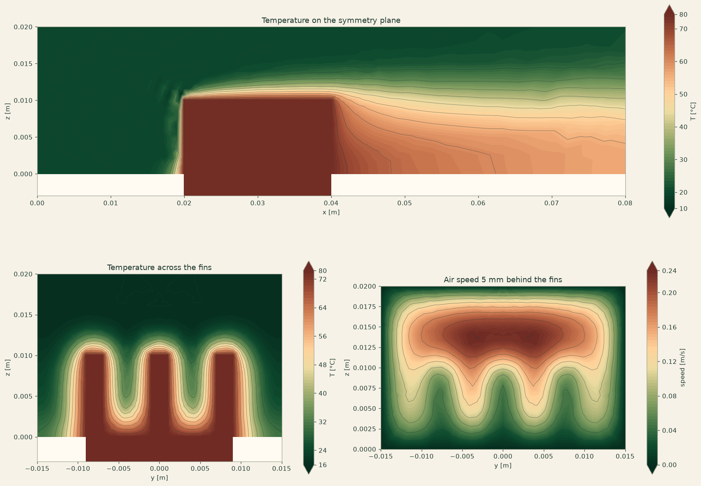
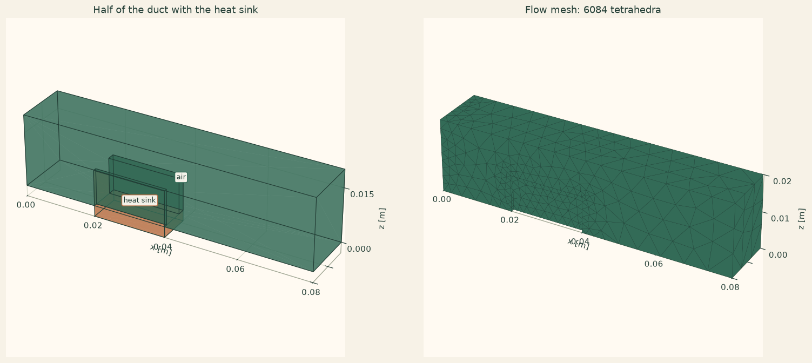

Docs › Examples › Heat sink in a forced air flow
Conjugate heat transfer · 3D
Heat sink in a forced air flow
An aluminium heat sink with three fins that cools a 1 W component in a small laminar air duct.
Run locally with OneSimulation. The example downloads are free. Running them requires an activated runtime. Runtime Alpha 0.2.1a7 · CPython 3.13 on macOS (Apple Silicon), Ubuntu 22.04 (x86-64), and Windows x64. Installation and activation · View pilot plans. Scope of the reference checks.

What it computes
OneSimulation solves the laminar 3D air flow around the fins with Taylor-Hood elements on a tetrahedral mesh of half the duct read from STEP and the heat transport through aluminium and air with quadratic elements, driven one way by the flow. The outlet bulk temperature, the heat sink temperatures and the thermal resistance are evaluated. The script that builds the STEP files comes with the notebook.
What it checks
The outlet bulk temperature rises by 14.19 K against 13.76 K from the energy balance (+3.1 % on the coarse mesh), the heat sink is nearly isothermal at 74.4 °C at the base and 74.0 °C at the fin tip, and its thermal resistance is 54.4 K/W at an air flow of 3.6 l/min.
Geometry
The notebook starts at the import of the CAD files heat_sink_forced_air.step, heat_sink_forced_air_air.step, heat_sink_forced_air_sink.step: STEP (AP242), readable by any CAD program, with the names of the faces that the boundary conditions use. Put them next to the notebook.

The geometry script
The script heat_sink_forced_air_geometry.py builds the geometry with the CAD objects of OneSimulation and writes the files. Change a dimension there, run it, and run the notebook again.
"""Geometry of the OneSimulation example "Heat sink in a forced air flow".
Builds one half (y > 0) of a rectangular air duct, 80 mm long (x), 30 mm wide and 20 mm high, with
an aluminium heat sink on its floor, with the CAD objects of OneSimulation. The heat sink has a
20 x 18 x 3 mm base and three fins (2 mm thick, 10 mm high, 6 mm apart; the middle fin is cut in
half by the symmetry plane). The duct with the heat sink is written to heat_sink_forced_air.step;
its faces are named after the two bodies: air.x_min (inlet), air.x_max (outlet), air.y_min and
sink.y_min (symmetry plane), sink.z_min (heated bottom of the base), and the duct walls air.y_max,
air.z_min, air.z_max. The air alone, which carries the flow mesh, is written to
heat_sink_forced_air_air.step, the heat sink to heat_sink_forced_air_sink.step.
"""
from onesim.cad.d3 import Box
mm = 1e-3
duct = Box(length=80 * mm, width=15 * mm, height=20 * mm)
sink = (
Box(length=20 * mm, width=9 * mm, height=3 * mm, origin=(20 * mm, 0.0, -3 * mm))
| Box(length=20 * mm, width=1 * mm, height=13 * mm, origin=(20 * mm, 0.0, -3 * mm))
| Box(
length=20 * mm, width=2 * mm, height=13 * mm, origin=(20 * mm, 7 * mm, -3 * mm)
)
)
air = duct - sink
(air.named("air") | sink.named("sink")).save("heat_sink_forced_air.step")
air.save("heat_sink_forced_air_air.step")
sink.save("heat_sink_forced_air_sink.step")The notebook
The complete notebook, cell by cell. Run it to produce the figures and the comparison printout.
A component dissipating \(Q=1\) W sits under an aluminium heat sink (base 20 x 18 x 3 mm set flush into the floor of an air duct, three fins 2 mm thick and 10 mm high). Air at 20 °C flows through the duct (30 mm wide, 20 mm high) with a mean velocity of 0.1 m/s; the flow is laminar (\(Re\approx110\)). The air flow obeys the steady Navier-Stokes equations; the heat is conducted through the aluminium and carried by the air,
with constant properties, so the flow drives the heat one way (no buoyancy).
Half of the duct (symmetry plane \(y=0\)) comes from the CAD file heat_sink_forced_air.step, the air alone from heat_sink_forced_air_air.step and the heat sink from heat_sink_forced_air_sink.step; the script heat_sink_forced_air_geometry.py builds them with the CAD objects of OneSimulation.
| face | flow | heat | |---|---|---| | inlet x_min | fully developed duct profile, 0.1 m/s | \(T=293.15\) K | | outlet x_max | traction free | no conduction | | bottom of the base | — | \(Q/2\) over the half base (1 W in total) | | symmetry plane \(y=0\) | free slip | no flux | | duct walls, fins | no slip | insulated walls |
Reference. All heat leaves with the air, so the outlet bulk temperature follows from the energy balance \(T_{b,\mathrm{out}}=T_\mathrm{in}+Q/(\dot m c_p)\) (Incropera et al., Fundamentals of Heat and Mass Transfer, Sec. 8.3). The thermal resistance \((T_\mathrm{base}-T_\mathrm{in})/Q\) is the number a designer reads off.
from dataclasses import replace
import numpy as np
from onesim.cad.d2 import Plane
from onesim.cad.exchange import load
from onesim.materials import IsotropicSolid, NewtonianFluid
from onesim.meshing import LocalRefinement, TetrahedralMesher
from onesim.numerics import Numerics
from onesim.numerics.fem import FiniteElement, GalerkinAdvection, Lagrange, TaylorHood
from onesim.numerics.linear import SparseDirect
from onesim.numerics.nonlinear import Newton
from onesim.physics.heat_transfer import (
ConvectiveHeatTransfer,
FixedTemperature,
HeatFlux,
)
from onesim.physics.hydrodynamics import (
FixedVelocity,
FlowTraction,
FreeSlipLaw,
IncompressibleNavierStokes,
NoSlipWall,
WallShear,
fully_developed_inflow,
)
from onesim.results.derived import derived_field
from onesim.results.integration import integrate_plane
from onesim.results.sampling import field_function
from onesim.simulation import Problem, Simulation, regionwise
from onesim.simulation.initial_conditions import InitialValue
from onesim.visualization import plots, theme
theme.set()Geometry and mesh
The air gets a tetrahedral flow mesh, 2 mm around the fins and at the inlet; the heat mesh covers duct and heat sink, with the heat sink embedded so that its surface consists of cell faces.
duct, air, sink = (
load("heat_sink_forced_air.step"),
load("heat_sink_forced_air_air.step"),
load("heat_sink_forced_air_sink.step"),
)
faces, walls = duct.boundaries, air.boundaries
length, half_width, height = air.size
near_sink = lambda points: np.clip(
np.minimum(
0.002
+ 0.4 * np.maximum(np.abs(points[:, 0] - 0.03) - 0.012, 0)
+ 0.25 * np.maximum(points[:, 2] - 0.012, 0),
0.002 + 0.3 * points[:, 0],
),
0.002,
0.006,
)
flow_mesh = TetrahedralMesher(
target_size=0.006, minimum_size=0.001, size_field=near_sink
).generate(air)
heat_mesh = TetrahedralMesher(
target_size=0.006,
minimum_size=0.001,
embedded_regions=(sink,),
size_field=near_sink,
).generate(duct)
view = plots.Camera(elevation=30, azimuth=-60)
fig = plots.figure(1, 2, size=(14, 6))
plots.geometry(
[air.named("air"), sink.named("heat sink")],
camera=view,
title="Half of the duct with the heat sink",
ax=fig[0],
)
plots.mesh(
flow_mesh,
groups=("all",),
legend=False,
camera=view,
title=f"Flow mesh: {flow_mesh.cell_count} tetrahedra",
ax=fig[1],
)
plots.show()Flow
air_fluid = NewtonianFluid(density=1.204, dynamic_viscosity=1.81e-5)
mean_speed = 0.1
no_slip = walls.all - walls.x_min - walls.x_max - walls.y_min
flow = IncompressibleNavierStokes(domain=air.volume, material=air_fluid)
velocity = (
Simulation(
problem=Problem(
name="Duct flow",
geometry=air,
physics=(flow,),
boundary_conditions=(
FixedVelocity(
boundary=walls.x_min,
physics=flow,
value=fully_developed_inflow(
flow_mesh,
walls.x_min,
mean_velocity=mean_speed,
no_slip=walls.y_max | walls.z_min | walls.z_max,
),
),
FlowTraction(
boundary=walls.x_max,
physics=flow,
value=lambda x, y, z: np.zeros((len(x), 3)),
),
NoSlipWall(boundary=no_slip, physics=flow),
WallShear(boundary=walls.y_min, physics=flow, law=FreeSlipLaw()),
),
initial_conditions=(InitialValue(flow.velocity, (0.0, 0.0, 0.0)),),
),
mesh=flow_mesh,
numerics=Numerics(
spatial=FiniteElement(element=TaylorHood()),
initial_guess={flow.velocity: (0.0, 0.0, 0.0)},
nonlinear_solver=Newton(
linear_solver=SparseDirect(),
absolute_tolerance=1e-12,
relative_tolerance=1e-9,
maximum_iterations=15,
),
),
)
.solve_stationary()
.field(flow.velocity)
)Conjugate heat transfer
Aluminium and air properties are assigned region by region; in the heat sink the velocity of the nearest point of the flow mesh, on a no-slip wall, is zero.
properties = {"air": (1.204, 1006.0, 0.0257), "aluminium": (2700.0, 900.0, 200.0)}
by_region = lambda index, unit: regionwise(
((sink, properties["aluminium"][index]),),
default=properties["air"][index],
unit=unit,
)
material = replace(
IsotropicSolid(
density=1.0,
specific_heat_capacity=1.0,
thermal_conductivity=1.0,
youngs_modulus=1.0,
poisson_ratio=0.3,
thermal_expansion_coefficient=0.0,
),
density=by_region(0, "kg/m^3"),
specific_heat_capacity=by_region(1, "J/(kg*K)"),
thermal_conductivity=by_region(2, "W/(m*K)"),
)
power, inlet = 1.0, 293.15
bottom = duct.select(faces=lambda face: face.center[2] < -0.0029)
inflow = duct.select(faces=lambda face: face.center[0] < 1e-9 and face.center[2] > 0)
heat = ConvectiveHeatTransfer(
domain=duct.volume, material=material, velocity=field_function(velocity)
)
temperature = (
Simulation(
problem=Problem(
name="Heat sink",
geometry=duct,
physics=(heat,),
boundary_conditions=(
FixedTemperature(boundary=inflow, physics=heat, value=inlet),
HeatFlux(
boundary=bottom, physics=heat, value=-power / 2 / (0.020 * 0.009)
),
HeatFlux(boundary=faces.all - inflow - bottom, physics=heat, value=0.0),
),
),
mesh=heat_mesh,
numerics=Numerics(
spatial=FiniteElement(
element=Lagrange(order=2), convection=GalerkinAdvection()
),
linear_solver=SparseDirect(),
),
)
.solve_stationary()
.field(heat.temperature)
)Results
The outlet bulk temperature from the enthalpy flux against the energy balance, and the temperatures of the heat sink.
outlet_plane = Plane(origin=(length - 1e-6, 0, 0), normal=(1, 0, 0))
carried = derived_field(
velocity,
lambda u, points: u[:, 0] * np.ravel(temperature.evaluate(points)),
name="enthalpy_flux",
unit="K*m/s",
)
flow_rate = integrate_plane(velocity, outlet_plane, normal_component=True).value
outlet = integrate_plane(carried, outlet_plane).value / flow_rate
balance = inlet + power / 2 / (properties["air"][0] * flow_rate * properties["air"][1])
base = temperature.evaluate([[0.03, 0.0045, -0.0029]])[0]
tip = temperature.evaluate([[0.03, 0.008, 0.0099]])[0]
print(
f"Reynolds number {air_fluid.density * mean_speed * 4 * (2 * half_width * height) / (2 * (2 * half_width + height)) / air_fluid.dynamic_viscosity:.0f}, "
f"air flow {2e3 * flow_rate * 60:.3f} l/min"
)
print(
f"outlet bulk temperature {outlet - 273.15:.3f} °C, energy balance {balance - 273.15:.3f} °C "
f"(rise {outlet - inlet:.3f} K against {balance - inlet:.3f} K, {100 * ((outlet - inlet) / (balance - inlet) - 1):+.2f} %)"
)
print(
f"base centre {base - 273.15:.2f} °C, tip of the outer fin {tip - 273.15:.2f} °C; thermal resistance {(base - inlet) / power:.1f} K/W"
)Figure
The temperature on the symmetry plane and in a cross-section through the fins, and the air speed in a cross-section 5 mm behind the heat sink, where the wakes of the fins are still visible.
across = Plane(origin=(0.03, 0, 0), normal=(1, 0, 0))
fig = plots.figure(layout=[["side", "side"], ["temperature", "speed"]], size=(15, 11))
plots.section(
temperature,
plane=Plane(origin=(0, 1e-6, 0), normal=(0, 1, 0)),
component=lambda T, p: np.ravel(T) - 273.15,
contours=12,
subdivisions=2,
label="T [°C]",
xlabel="x [m]",
ylabel="z [m]",
title="Temperature on the symmetry plane",
ax=fig["side"],
)
plots.section(
temperature,
plane=across,
component=lambda T, p: np.ravel(T) - 273.15,
contours=12,
subdivisions=2,
symmetry={"planes": [((0, 1, 0), (0, 0, 0))]},
label="T [°C]",
xlabel="y [m]",
ylabel="z [m]",
title="Temperature across the fins",
ax=fig["temperature"],
)
plots.section(
velocity,
plane=Plane(origin=(0.045, 0, 0), normal=(1, 0, 0)),
component=lambda u, p: np.linalg.norm(u, axis=1),
contours=10,
subdivisions=2,
symmetry={"planes": [((0, 1, 0), (0, 0, 0))]},
label="speed [m/s]",
xlabel="y [m]",
ylabel="z [m]",
title="Air speed 5 mm behind the fins",
ax=fig["speed"],
)
plots.show()Going further
Add fins or make them taller in heat_sink_forced_air_geometry.py and follow the thermal resistance; raise the air speed; or switch the flow off and add buoyancy for natural convection.